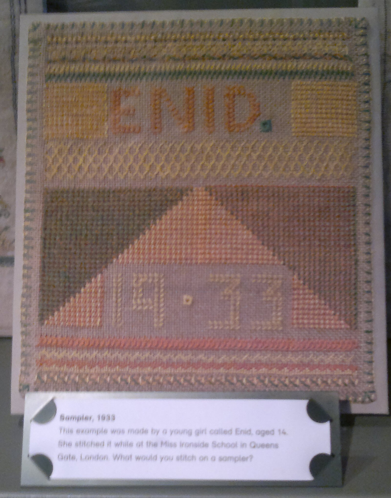

Monday, November the 14th, 2011
back to: title, date or indexes
Dan Chambers sent me this snap of a sampler, taken in the Bethnal Green Museum of Childhood. The provenance card states that it was made by a girl named Enid, aged fourteen, so, as Dan says, “maybe not so tiny”. But it may well be that the Museum has not done its research thoroughly, and that the sampler was made by an anonymous needleworker for Tiny Enid. What with the privations of the times (1933) there may have been a dearth of thread, not enough, at any rate, to sew both TINY and ENID.
